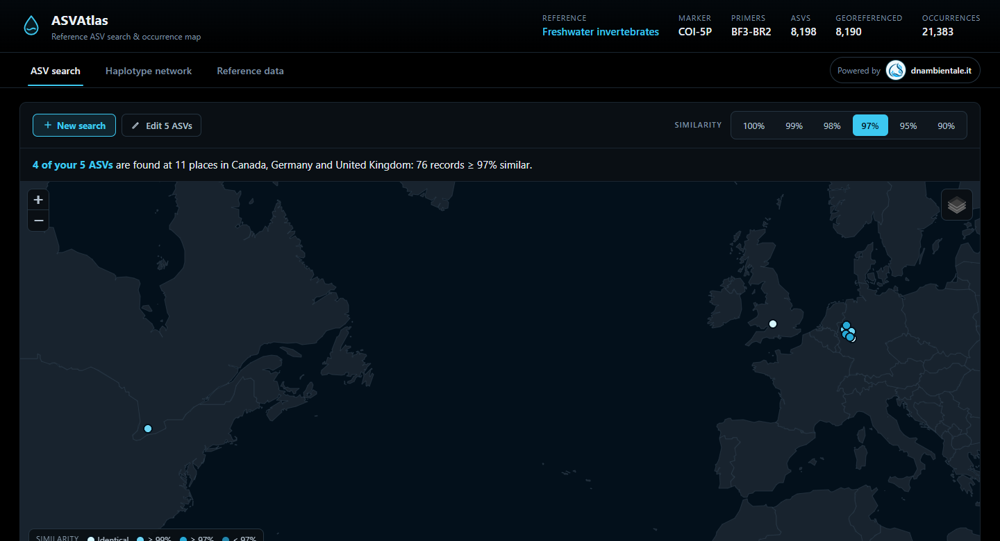

ASVAtlas: where in the world is your ASV?
A free web application to search your ASVs in a reference database, see on the map where they have already been found and compare them in haplotype networks.

DNA metabarcoding yields lists of ASVs (amplicon sequence variants), exact sequences that often tell apart not only species but also their genetic variants. ASVAtlas compares these sequences with a reference database and shows on a map where identical or similar sequences have already been found in other studies.
It is simple to use: paste your ASVs in FASTA format, or load a file, and choose the similarity, from 100% (identical records) to 90%. For each ASV the application gives the species and the places and countries where it occurs. For the species found you can build haplotype networks (median-joining, TCS, minimum spanning network) and see on the map which populations are genetically closest to your ASV. You can also load the coordinates of your samples, which stay in your browser, to see the distance to the nearest record.
The first database, Freshwater invertebrates, holds 8,198 COI ASVs (BF3–BR2 fragment) of freshwater macroinvertebrates from 19 metabarcoding studies in 14 countries, with more than 21,000 georeferenced records. We reprocessed all the studies from the raw reads with one pipeline, so that ASVs of different studies can be compared. The Reference data tab of the application lists the studies and explains how the data were processed.
Comparing your ASVs with those of other studies turns a list of species into a map of their genetic diversity.
ASVAtlas is written in Julia and is open source. The sequences you search are used only to answer the search and are not stored; the site keeps only anonymous usage counts. The reference database can grow with new studies and, in the future, other markers.